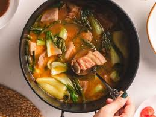

Sinigang

Sinigang is a sour and savory Filipino soup or stew. The word "sinigang" comes from the Tagalog word meaning "stewed"
Ingredients
- 1 kg of Pork
- 1 Sinigang mix
- 1 Pork cube
- 1 Onion
- 3 Tomatoes
- Spinach or Kangkong (300 grams)
- String beans (Depends on how much you like to put on)
- taro(if you want)
Home